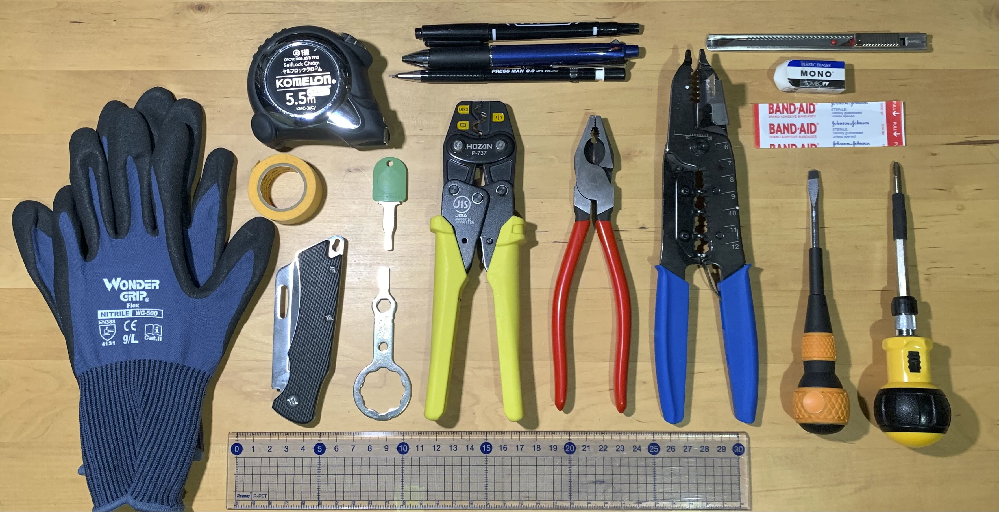
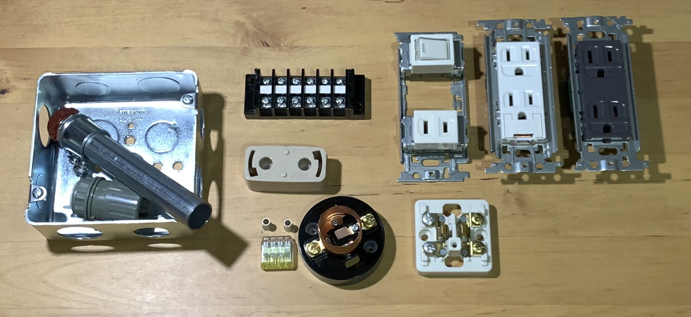
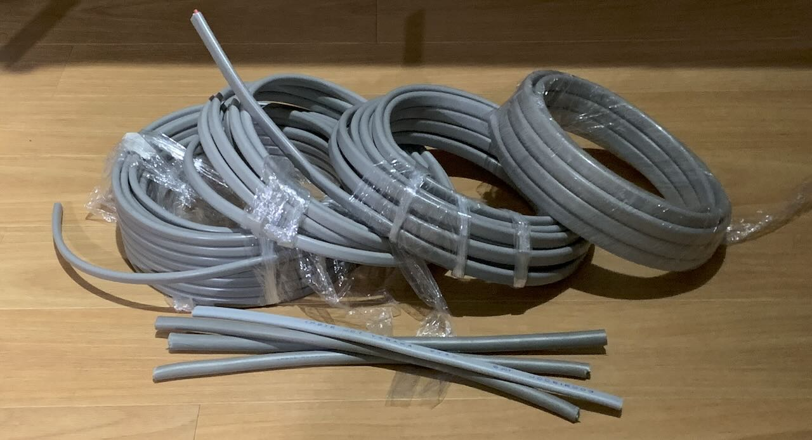
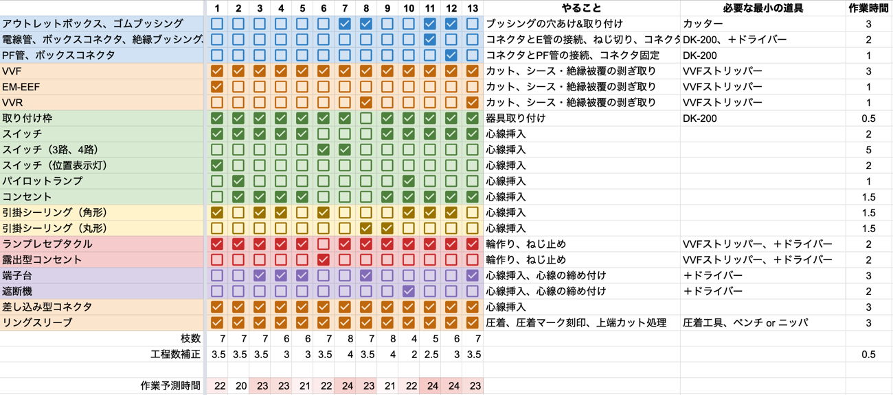
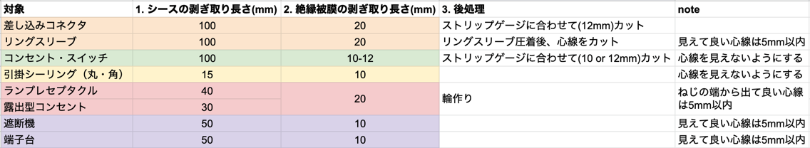
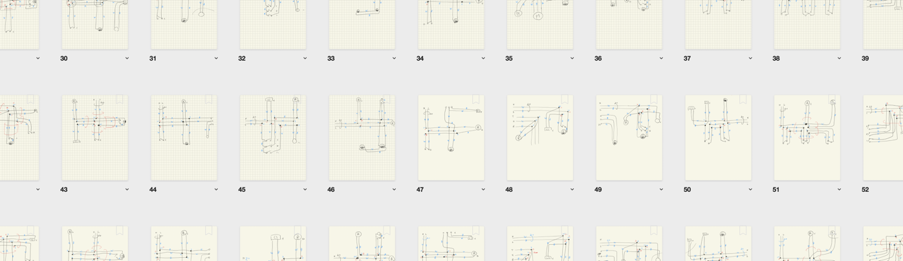
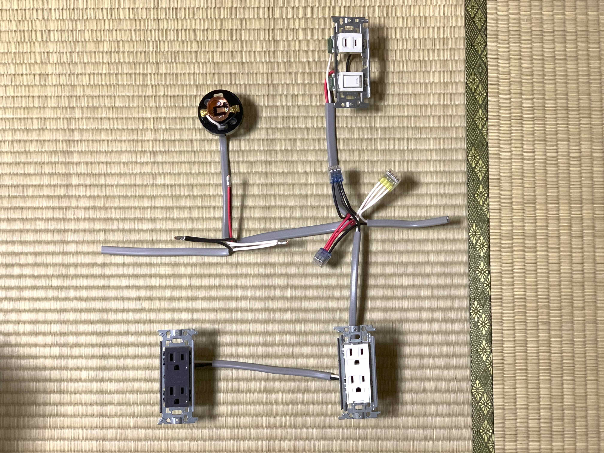
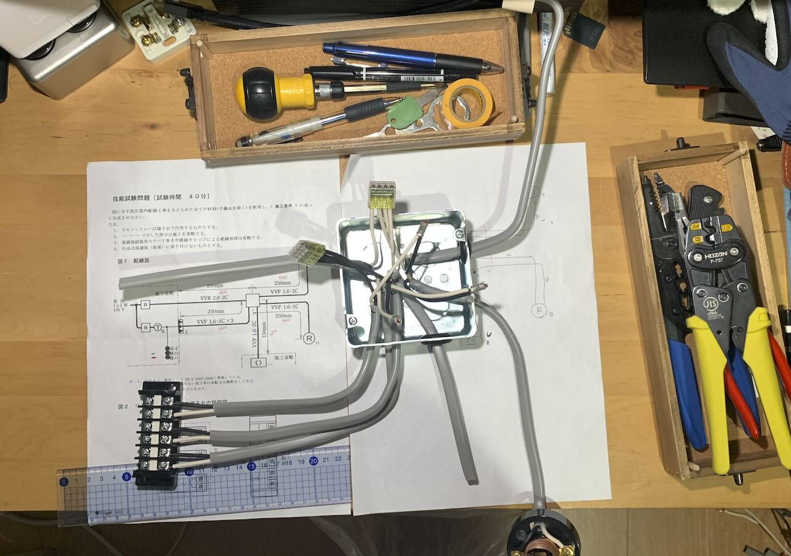
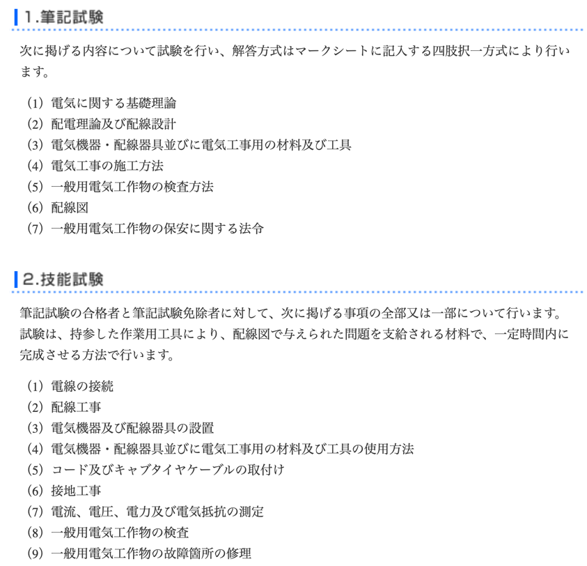

今更ですが、小中学生の頃に興味があった電気まわりをいじれるよう、 第二種電気工事士の資格を取ることにしました。
この資格で、実家の古いダウンライト・スイッチの交換や、自前の太陽光発電の応用に活用することになると思います。
※ 本記事は、令和4年度第二種電気工事士上期試験（2022年上期）を受験した際の内容です。
筆記試験の学習
書籍とアプリで学習を進めました。 並行して、技能試験に関する情報収集を初めておくことで、自然と複線図やリングスリーブの圧着マークが頭に入ります。
筆記試験の基本的な計算については、中学の頃の技術で習ったことの復習といった内容。 法規、器具、施工方法などについては全く知識がないため、教科書として、「絵で見て覚える第2種電気工事士筆記試験」を購入して一通り学習しました。

並行して、アプリ、全問解説付 第2種電気工事士 筆記 一問一答問題集を何周か実施した頃には合格点は普通にクリアできるレベルに。
試験直前に過去問を2年分を流して解き、本番へ。
余談ですが、三相三線式の三相交流による送電はホントによく出来た送電方法だなぁと感心しました。ニコラ・テスラすごい。
CBT方式の受験は今後どうなるのか気になります。図も計算も紙に直接問題用紙に書き込みたい・・。 （過去問はiPadでPDFに書き込みして解いたのですが、CBTでの試験はそんな環境ではないですし・・）
技能試験の工具と器具
工具
工具は第二種電気工事士の試験へ申し込んですぐに購入しました。早めに手に馴染ませておきたいと思ったのと、モチベーションアップのため、というのもあります。
HOZANさんのセットが人気のようですが、私は手持ちの工具（ドライバー、ペンチ、ニッパなど）があったため、必須の圧着工具と時間短縮が期待できるワイヤーストリッパーを購入しました。 手持ちの工具がなかったとしても、下に挙げる工具以外は好きに揃えた方が良いかもしれません。


合格ゲージは心線の長さをカットと同時に測れるため、あると便利です。 通称、ガッチャン（ビクター VA線ストリッパー 6003VA）も人気のようです。仕事として現場で使うことを想定するなら、こちらも持っておくと良さそうです。
また、練習する中で増やした工具として:


があります。
DK-200はアウトレットボックス対策であると便利な道具です。 DK-200があれば、ウォーターポンププライヤーは不要です。
電工ナイフはHOZANさん以外のものでも良かったかもしれませんがお好みで。
プレートはずし器は、マイナスドライバーで取り外すよりスムーズで、練習後の分解でよく使いました。邪魔にならないので忍ばせておいても良いアイテム、といった感じ。DK-200の先端がこのくらいの使い心地だと良いのですが。
その他、手持ちのもので愛用しているもの:
-
- マイナスドライバーとして、というよりは、先端が薄い工具として活躍。技能試験では枠の取り付け。
-
- ランプレセプタクルでのねじ回しが早い


などなど。
 技能試験当日に持って行った工具とその仲間たち
練習器具
（節約したいので）これまたセットで購入せず、将来的に使う可能性があるものを中心に購入し練習しました。 近くに電工用品を売っているところがあれば、直接触りに行っても良いかもしれません。 アウトレットボックスや電線管などは試験本番で初めて触ることになると手間取ると考えたので、再利用はできないですが購入しました。
ランプレセプタクルは最初Panasonic製のものを使っていましたが、明光社製のものだとわかり、購入し直しました（ねじ径が異なり、Panasonic製の方が難しい）。 ホームセンターなどにある、オーム電機 レセプタクル E26 HS-L26RT-G が明光社のものでした。
主に購入した器具

- 端子台と遮断機: 端子台で遮断機を代用できると判断
- 引掛シーリング: 丸も角も施工方法は同じなのでどちらかで良い（実用的なのは丸型だったかも・・）
- コンセント: 将来使いそうなアース付きのものを適当に代用して先行購入
ケーブル

- VVFは 1.6 2C/3C, 2.0 2C/3C を購入し、IVが必要ならここから作る作戦
- VVR/EM-EEFは1mだけ購入し、ひたすらシース剥ぎ取りの練習をするのみ
技能試験の学習
個別の作業を繰り返し練習し、試験問題の通しは2つ選んで時間を計測しました。 また、youtubeの動画で、個別作業、試験問題の通しを見て学習しました。良い時代です。主に参考にした動画のリストはこちらにまとめておきました。
https://www.youtube.com/playlist?list=PLnfzwYiU0oWtGmGf9kURd-azyWGoV10bN
以下のチャネルには大変お世話になりました m(__)m
個別の作業の練習
まず、試験センターで公表している「技能試験の概要と注意すべきポイント」（2022年3月 ）に目を通しておきました。重要なポイントが全て書いてあります。
器具の洗い出しと目標時間設定
過去問から器具を以下のように分類しました:

全体で遅くとも25分以内に作業完了する目標とし、それぞれの器具で作業時間の見積もりを立てます。 この作業時間以内に作業が完了するよう、自信がつくまで練習を実施することにしました。 なお、上の表は、上から順に施工するイメージで並べています（アウトレット→スイッチ→コンセント→シーリング→ランプレセプタクル→コネクタ→リングスリーブ、といった感じ）。
ケーブルの加工作業は以下のようにまとめました:

輪作りはひたすら練習。
複線図作りは、5周ほど繰り返し、複線図を作った後に、試験センターで公表されている解答の絵と写真がイメージできるようにしました。 動画を使った学習もここで併用しています。
 複線図をひたすら書いてみる
通しで実施する試験問題の選択と練習
試験問題は全部で13問ありますが、その中で手持ちの器具で実際に試せそうなものから簡単そうな問題(No.2)と、時間を要す予測の問題(No.8)を選びました。
No.2
 パイロットランプをコンセント部品で代用してみたり・・
No.8
 25mmのゴムブッシングはそもそも買ってない横着ぶり
ここで計測した時間が、予測時間以内に収まっていれば通しの練習としては十分と判断しました。（土日平日家事育児で余裕がないというのもありますが・・）
技能試験当日
持ち物
写真にある物の他に、上着、腕時計、タオルを持っていっています。
- 手袋はアウトレットボックスやナイフを扱う場面であると安心ですが、なかなか馴染むまで練習できませんでした。本番はアウトレットボックスがありませんでしたので、素手で施工しました。
- マスキングテープはゴミ袋の固定や、定規の固定で利用しました。
- カッターはゴムブッシングをサクッと切るのに便利だったため持ち込みました。（一応、自粛ではありますが、普段から使って慣れていることもあるので問題ないと判断しました）
- 30cm定規は、カットする長さをさっとみるためですが、どちらかというと手前において、手前に転がり落ちることを防ぐ目的になっていました。35cmでは足りないため、試験開始時に広げた試験用紙に測って書き込みました。（手尺やP-925で間違いなく測れるスキルがあれば不要ですが）
といったところでしょうか。
本番
試験でなんと練習していたNo.2が出題された（運が良い・・）ため、安心して取り組むことができました。 ランプレセプタクルのシースの剥ぎ取りで、間違えて10cm出してしまいましたが、施工条件の半分以上の長さになるため、気にせず4cm残してカットし、施工しました。
複線図記述とカット長さの計算で4分ほど使い、施工は18分程度で完了しました。見直しは念入りに・・。
まとめ
第二種電気工事士の試験は、筆記試験と技能試験に分かれていますが、筆記だけ、技能だけ、という学習よりも、ある程度技能の知識を頭に入れた上で筆記試験に取り組んだ方が良いように感じました。 そもそも、趣味でやる時点で、技能で実地に向けて学習する方がモチベーションとしても良かったようです。
また、第二種電気工事士の受験者数が多いこともあり、動画コンテンツが豊富なのは良いポイントでした（動画であれば、寝る前に子供を寝かしつけながらこっそりみることができます）。
メモ
第二種電気工事士試験
試験センター:第二種電気工事士試験 より抜粋

筆記試験
筆記試験をマスクした状態で受けたら、消しゴムの消しかすを息で飛ばせないことに気づく
— Ato Araki (@atotto) May 29, 2022
技能試験
技能試験はNo.2でだいぶ安心した。あとはお祈り…
— Ato Araki (@atotto) July 24, 2022
わーい #第二種電気工事士
— Ato Araki (@atotto) August 18, 2022
これでDIYが捗る pic.twitter.com/j07GNsAWrH